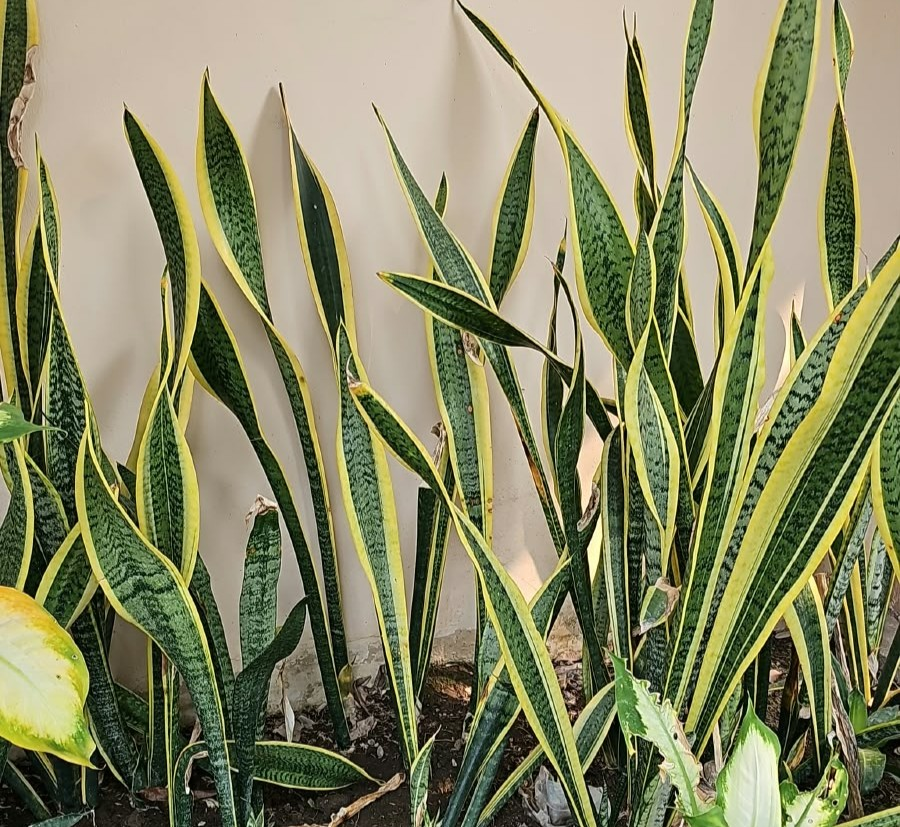

Sansevieria trifasciata Prain
Afrika Barat tropis

Tanaman yang sangat berat ini membutuhkan wadah berat dengan drainase baik. Isi wadah dengan tanah pot berkualitas baik, lalu letakkan tanaman di dalam pot, tekan sedikit tanah di sekitar tanaman dan siram sedikit. Waktu terbaik menanam tanaman lidah mertua adalah pada musim semi atau pada Maret hingg Juni di Indonesia. Tanaman lidah mertua tahan banting di Zona Ketahanan Tanaman USDA 10-12. Di daerah lain di negara tempatnya tumbuh sebagai tanaman hias, Anda dapat memindahkan wadah tanaman ular ke luar selama musim panas dan kembali ke dalam ruangan sebelum cuaca dingin tiba.
Pada dasarnya, lidah mertua memiliki warna hijau. Namun ternyata masih ada variasi warna lain. Misalnya adalah warna hijau abu-abu, hijau muda, hijau tua, hijau kuning, hingga kuning putih. Selain itu, pada daunnya juga terdapat garis-garis yang tak beraturan.
Pada umumnya, bentuk daun lidah mertua adalah tegak, memanjang, runcing, dan keras.
Dengan perbedaan ukuran ini, pemiliknya bisa menyesuaikan penempatannya lebih mudah.
Banyak orang menyukai tanaman lidah mertua, karena perawatannya relatif mudah. Sebab, tanaman lidah mertua menyimpan cadangan air pada tubuhnya, sehingga pemiliknya bisa menyiramnya lebih sedikit.
Ciri-ciri lidah mertua yang terakhir adalah memiliki banyak spesies yang berasal dari keturunan asli serta hibrida. Bahkan, jumlah spesiesnya mencapai 70 jenis. Nah, untuk spesies hibrida sendiri berasal dari hasil persilangan yang dilakukan oleh manusia. Hal inilah yang terkadang membuat orang sulit untuk membedakannya.
Busuk daun pada Lidah Mertua terutama disebabkan oleh kelembaban yang berlebihan di tanah, yang memudahkan perkembangan jamur patogen.
Tanah yang drainasenya buruk juga berkontribusi terhadap busuk daun, karena menyebabkan genangan air.
Patogen seperti Phytophthora, Pythium, Rhizoctonia dapat menyebabkan busuk daun pada Lidah Mertua.